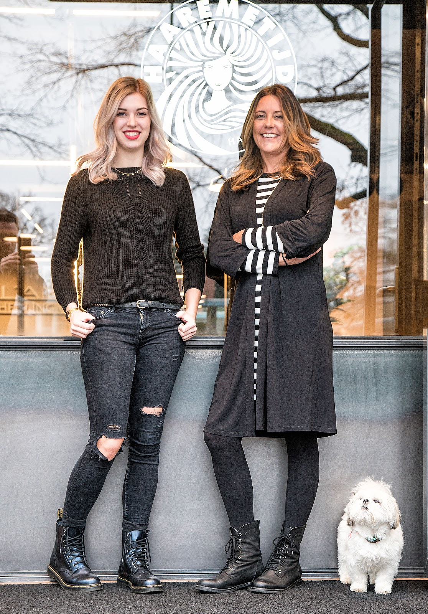
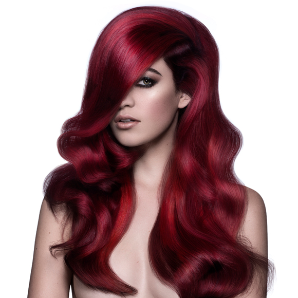
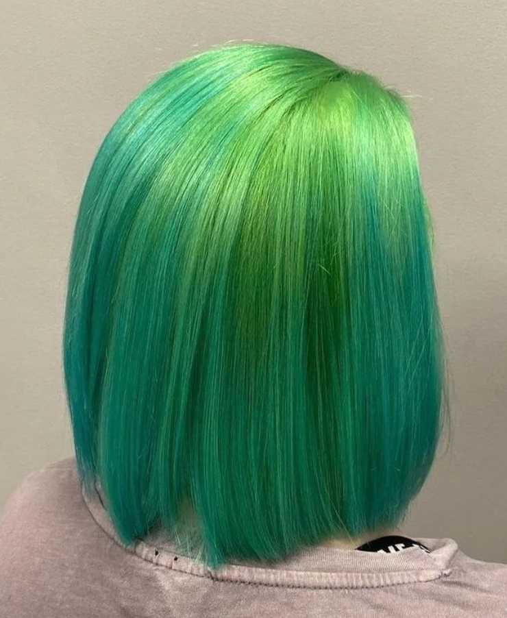
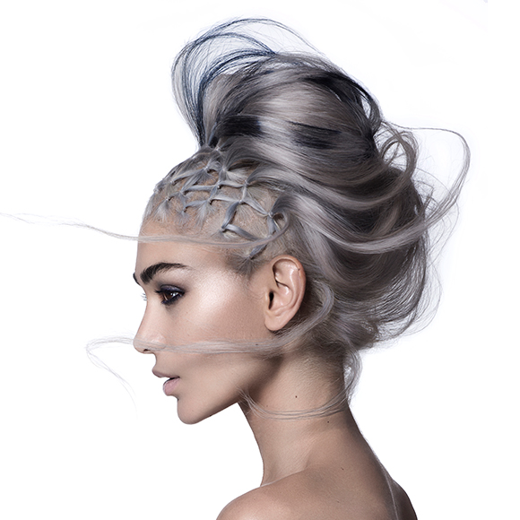
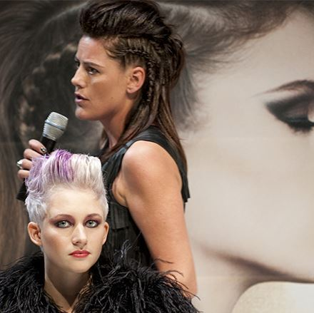
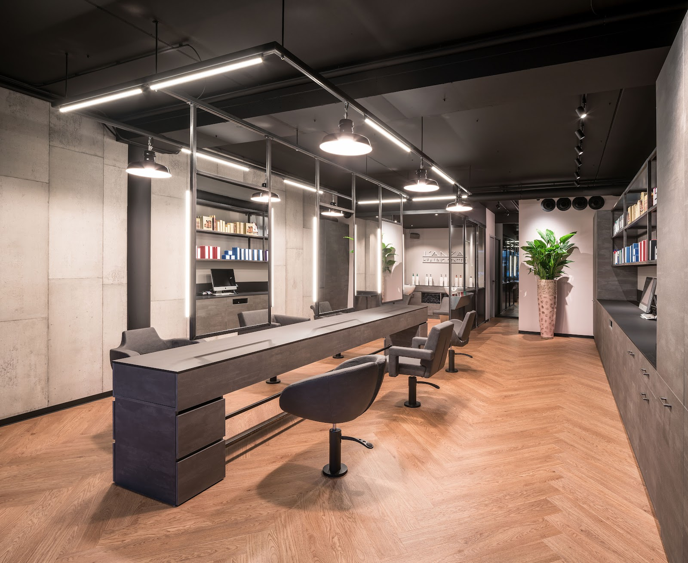
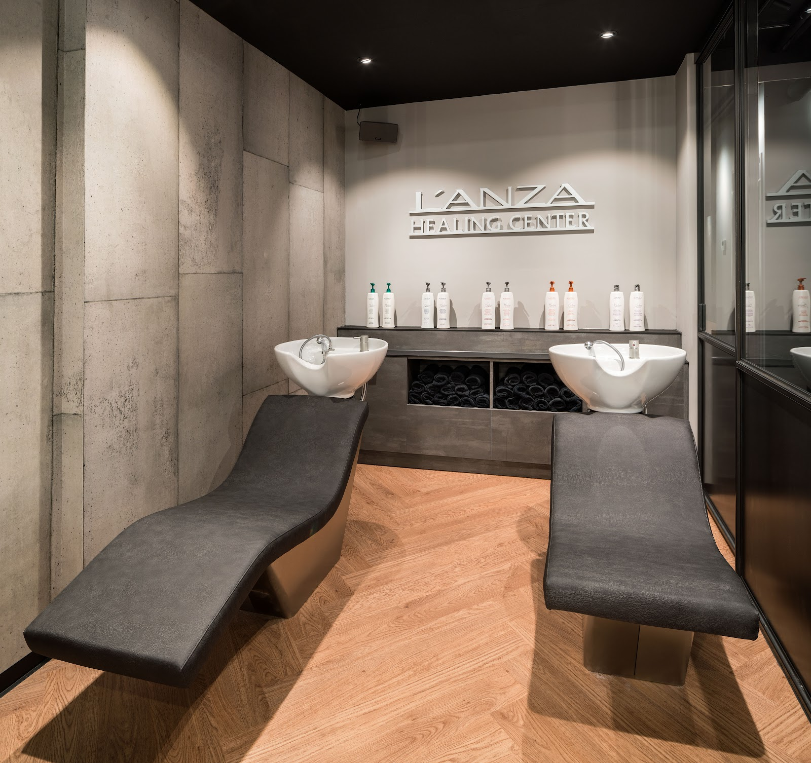
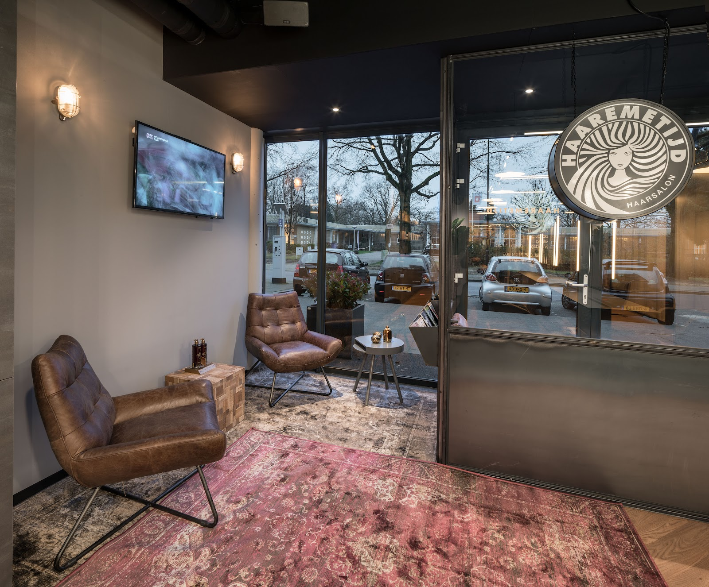
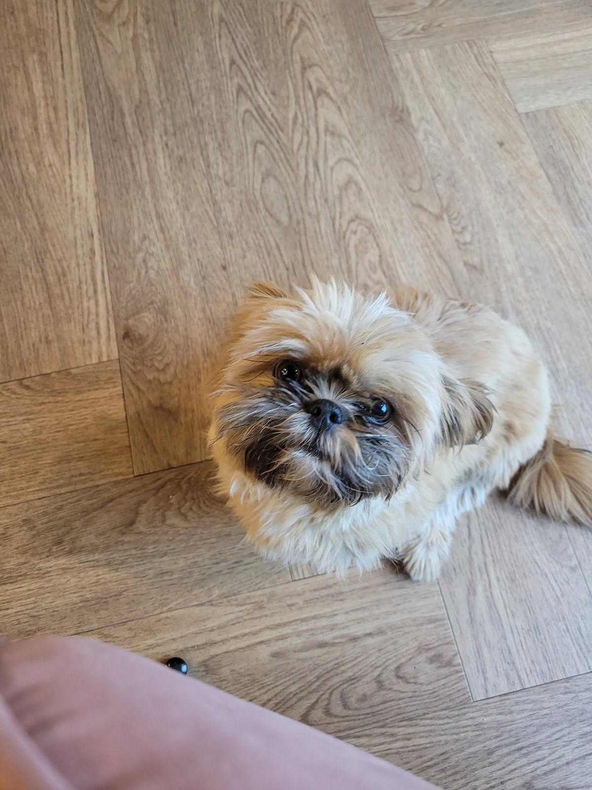
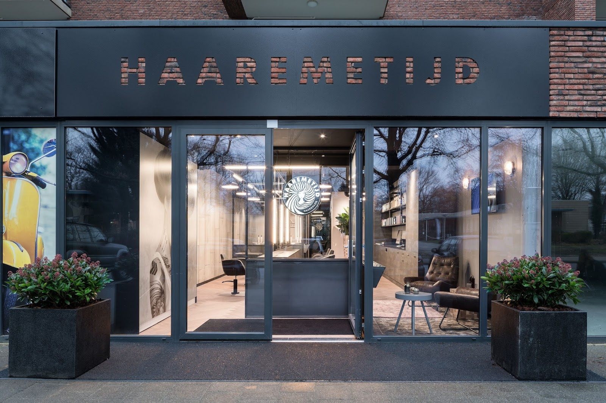

HAAREMETIJD
Haarsalon in Apeldoorn
Gezond haar is de beste basis voor mooi haar.
Knippen, kleuren en krullen aan de Henri Dunantlaan. Van natuurlijke tinten tot extreme fashion statements, altijd met oog voor de kwaliteit van uw haar. Quality time, zoals de naam belooft.
4,8 uit 58 Google-reviews

Kleur is hier het vak.
Haarkleuring is de specialiteit van Cindy. Jarenlang verzorgde ze de kleuren voor trendcollecties en de Nederlandse Haarmodelijn. Bij Haaremetijd krijgt u die kennis in de stoel: van een rustige natuurlijke tint tot een kleur waar de straat van opkijkt.
- KleurNatuurlijk tot fashion
- KnippenVoor het hele gezin
- KrullenUw krul terug in vorm
- L'ANZAHerstellende haarverzorging




Haaremetijd is een verbastering van "heremetijd": ongelooflijk en verbazingwekkend. Met deze salon kwam de droom van Cindy Hulsebos uit.
Cindy Hulsebos kreeg het vak met de paplepel ingegoten.
Haar ouders hadden samen een kapsalon in hartje Amsterdam. Op haar zestiende begon ze als leerling bij Robert & Peter, destijds de chicste salon van de stad.
-
1995
Helpt Hair Affairs openen in Amsterdam. In zes jaar groeit de salon uit tot een van de grootste en meest trendy van de stad.
-
2002
Vaktechnisch trainer bij L'Oréal, de laatste periode als vaktechnisch adviseur van Redken. Ze leidt vele kappers op.
-
2007
Artistic Manager bij L'ANZA, als enige Europese Level 3 trainer: het hoogst haalbare niveau in de VS. Kleur wordt haar specialisme.
-
2015
Geen 80.000 kilometer per jaar meer, maar een eigen salon: Haaremetijd in Apeldoorn.
Beton, eiken en een leren stoel voor het wachten.
Achterin de salon zit het L'ANZA Healing Center, met wasstoelen waarin u echt even ligt. Bij Haaremetijd werken ze uitsluitend met L'ANZA Healing Haircare: verzorging die het haar herstelt en kleur langer laat houden.



Wat klanten zeggen
4,8 uit 58 reviews op Google
"Beste kapsalon van Apeldoorn! Cindy & haar team zijn heel vakkundig en zijn échte professionals in het kappersvak."
"Een hele prettige, deskundige kapperszaak. Ik kwam hier bij toeval terecht, maar zou niet meer anders willen. Hier krijg je het gevoel dat iedereen die er werkt van het vak houdt en aandacht heeft voor haar. (...)"

"Wij komen hier als gezin van 4 al jaren. Altijd gezellig, goede service, kwaliteit van het knippen. Komen hier met plezier en gaan altijd met een lach op het gezicht weer weg. Gezellige hondjes om je heen, altijd leuk. Beste haarsalon van Apeldoorn altijd 5 sterren."
"Ik ging er heen met veel te lang, vaag golvend haar en verliet met mijn mooie krullen terug en een glimlach op mijn gezicht. Bonuspunten voor de puppy."
"Heel tevreden! Professionele kleur expert, mooi geknipt, het föhn werk is perfect en zit de dag erna nog prima. Zeker met de gezellige sfeer een echte aanrader!"

Maak een afspraak
Bel of mail de salon, dan plannen we samen een moment dat u past.
Henri Dunantlaan 4437312 BD Apeldoorn
| Maandag tot en met vrijdag | 09:00 tot 18:00 |
|---|---|
| Zaterdag | 09:00 tot 17:00 |
| Zondag | Gesloten |